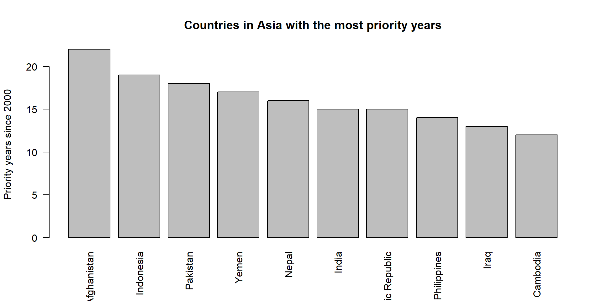

Last time we looked at coverage and incidence in one specific region.
That works when the question is small enough to inspect directly.
This time, let’s think about a bigger manuscript problem:
How can we flag issues across multiple countries when there is too much data to look through manually?
To make the repeated task concrete, we will use a simple flagging rule:
Priority year = MCV1 coverage below 90% and at least 1 measles case per 100,000 people.
The workflow changes:
Loops are easier when we know the exact task.
For one country, we need to:
Sounds like a good use of a function!
add_priority_rule <- function(country_data,
coverage_cutoff = 90,
incidence_cutoff = 1) {
country_data$cases_per_100k <- (
country_data$measles_cases / country_data$population * 100000
)
mcv_coverage_flag <- country_data$MCV1_coverage < coverage_cutoff
incidence_flag <- country_data$cases_per_100k >= incidence_cutoff
country_data$priority_year <- mcv_coverage_flag & incidence_flag
return(country_data)
}pakistan <- measles[
measles$country == "Pakistan" & measles$year >= 2000,
]
pakistan <- pakistan[order(pakistan$year), ]
pakistan <- add_priority_rule(pakistan)
head(pakistan[, c("year", "MCV1_coverage", "cases_per_100k", "priority_year")])# A tibble: 6 × 4
year MCV1_coverage cases_per_100k priority_year
<dbl> <dbl> <dbl> <lgl>
1 2000 57 1.34 TRUE
2 2001 59 2.42 TRUE
3 2002 60 2.39 TRUE
4 2003 62 2.84 TRUE
5 2004 63 2.49 TRUE
6 2005 61 1.71 TRUE summarize_priority_years <- function(country_name,
data,
min_year = 2000,
coverage_cutoff = 90,
incidence_cutoff = 1) {
country_data <- subset(
data,
country == country_name & year >= min_year
)
country_data <- add_priority_rule(
country_data, coverage_cutoff, incidence_cutoff
)
priority_years <- subset(country_data, priority_year)$year
data.frame(
country = country_name,
region = country_data$region[1],
sub_region = country_data$sub_region[1],
years = nrow(country_data),
priority_years = length(priority_years),
most_recent_priority_year = if (length(priority_years) == 0) {
NA_integer_
} else {
max(priority_years)
},
max_cases_per_100k = if (all(is.na(country_data$cases_per_100k))) {
NA_real_
} else {
round(max(country_data$cases_per_100k, na.rm = TRUE), 2)
}
)
}Before writing a loop, we made one repeatable unit:
If that works for Pakistan, the loop only needs to change the country name.
for loopfor loop: result country region sub_region years priority_years
1 Afghanistan Asia Southern Asia 24 22
2 Bangladesh Asia Southern Asia 24 9
3 India Asia Southern Asia 24 15
4 Nepal Asia Southern Asia 24 16
5 Pakistan Asia Southern Asia 24 18
most_recent_priority_year max_cases_per_100k
1 2022 44.50
2 2012 18.40
3 2016 5.47
4 2020 51.96
5 2022 15.02Each loop pass did the same job:
country_name.summarize_priority_years() for that country.lapply()The same idea can be written in a more functional style.
do.call() even though it’s weird. country region sub_region years priority_years
1 Afghanistan Asia Southern Asia 24 22
2 Bangladesh Asia Southern Asia 24 9
3 India Asia Southern Asia 24 15
4 Nepal Asia Southern Asia 24 16
5 Pakistan Asia Southern Asia 24 18
most_recent_priority_year max_cases_per_100k
1 2022 44.50
2 2012 18.40
3 2016 5.47
4 2020 51.96
5 2022 15.02Use the version that helps you think clearly.
for loop is often easier to read while you are learning.lapply() is compact once the repeated task is already a function.asia_summaries <- asia_summaries[
order(-asia_summaries$priority_years, asia_summaries$country),
]
head(asia_summaries) country region sub_region years priority_years
1 Afghanistan Asia Southern Asia 24 22
14 Indonesia Asia South-eastern Asia 24 19
34 Pakistan Asia Southern Asia 24 18
50 Yemen Asia Western Asia 24 17
32 Nepal Asia Southern Asia 24 16
13 India Asia Southern Asia 24 15
most_recent_priority_year max_cases_per_100k
1 2022 44.50
14 2022 12.91
34 2022 15.02
50 2022 144.43
32 2020 51.96
13 2016 5.47top_asia <- head(asia_summaries, 10)
top_asia_table <- top_asia[, c(
"country",
"sub_region",
"priority_years",
"most_recent_priority_year",
"max_cases_per_100k"
)]
top_asia_counts <- top_asia_table[, c(
"country",
"sub_region",
"priority_years"
)]
top_asia_details <- top_asia_table[, c(
"country",
"most_recent_priority_year",
"max_cases_per_100k"
)]
Student prompt
Repeat the regional analysis for Africa.
Your goal is to produce a table of the 10 countries in Africa with the most priority years since 2000.
Reuse the objects we already built.
You only need to change:
What if the manuscript team decides that 1 case per 100,000 is too sensitive?
Try the Africa analysis again with:
for looplapply()do.call(rbind, ...)In Exercise 2, this same habit helps you move from a draft analysis to a polished report.